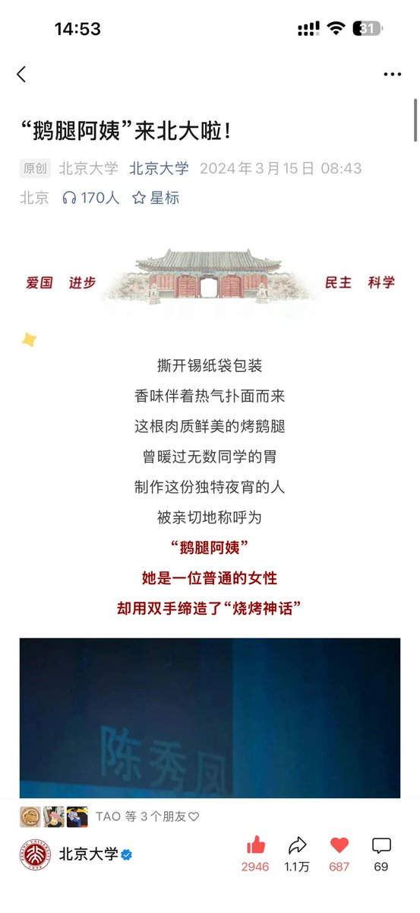
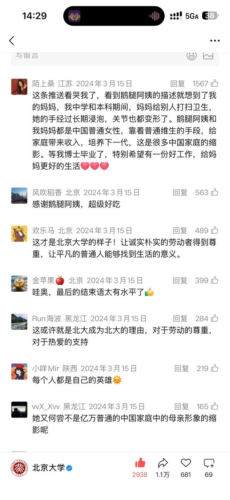

*⁂汐渋鈴蘭⁂*.･ﾟﾟ
@SupernovaLLan
@bisco91395061


Miju咪啾
@_miuj_9
北大连夜删除两年前鹅腿阿姨相关报道，人民日报的也删了🥲
我的一位在北大上学的朋友吃过，他现在和同学们都非常气愤，重点已经不是鹅腿鸭腿的问题了，是他们这么善良真诚的对待一个农民出身的阿姨，花着为数不多的生活费也要去照顾他们的生意，换来的却是无限的欺骗和伤害 https://t.co/zWecwPT3dt
菜菜警官
@bisco91395061
@LingJiaXin233 有没有人说说为啥鸭腿换成鹅腿被曝光了声音会这么大，鹅腿吃多了对人体不好吗？